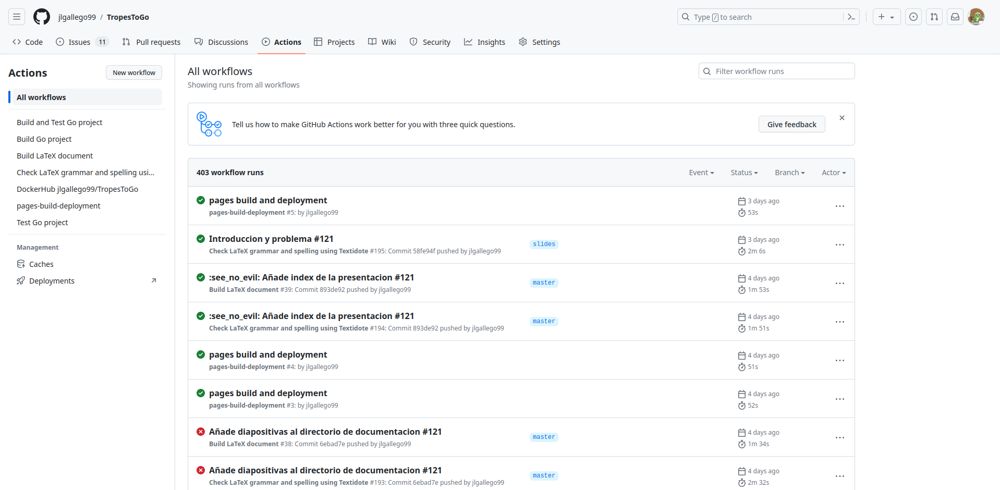

Trabajo fin de Máster
TropesToGo - Scraping de TvTropes
Jose Luis Gallego Peña
Índice
1. Contexto
Tropo
Patrón o recurso reiterativo y reconocible por la audencia.Interés en el estudio y generación de narrativas para que los autores puedan transmitir al público sus ideas de forma más efectiva.
Una obra se define mejor como un conjunto de tropos.
Su análisis permite obtener guías para crear obras más efectivas para el género, medio o los más comunes en la actualidad.
Los tropos son clave en la popularidad de una obra.
Ejemplo de tropo: Arma de Chéjov
Elimina todo lo que no tenga relevancia en la historia. Si dijiste en el primer capítulo que había un rifle colgado en la pared, en el segundo o tercero este debe ser descolgado inevitablemente. Si no va a ser disparado, no debería haber sido puesto ahí.
TvTropes
Wiki abierto con una gran cantidad de contenido sobre tropos de múltiples medios audiovisuales y sus relaciones.
2. Descripción del problema
Principal problema: contenido semi-estructurado y sin una API de acceso a datos.
TvTropes está pensada para usuarios humanos desde el navegador. Necesidad de una herramienta que extraiga los datos directamente de la web.Problemas adicionales: Información de metadatos, cambios constantes y estructura de las páginas.
Solución propuesta: Scraper que extraiga todos los datos necesarios de TvTropes.
Objetivos
OBJ01 Entenderá, extraerá, limpiará y preparará la información de cualquier página de tropos de TvTropes independientemente de su estructura.
OBJ02 Extraerá información de metadatos sobre las obras, que permitan relacionarlas con fuentes externas.
OBJ03 Se desarrollará una aplicación integrable en flujos de ciencia de datos mediante la cual el usuario pueda elegir los contenidos a extraer.
OBJ04 Entenderá la frecuencia con la que cambian los contenidos de TvTropes y la organización entre sus páginas, pudiendo tener siempre la versión más reciente de los datos.
OBJ05 Debe ser rápido y eficiente, adaptándose a la gran cantidad de datos que debe extraer.
3. Consideraciones legales y éticas del scraping
Entra dentro del uso legítimo el obtener información pública y sin ánimo de lucro.
Se respeta la licencia de TvTropes: Creative Commons Attribution-NonCommercial-ShareAlike 3.0 Unported
Políticas de cortesía. Scraping moderado.
4. Trabajos relacionados
Tropescraper
https://github.com/rhgarcia/tropescraper/Consejos sobre el scraping de TvTropes
https://nishalsach.github.io/posts/2019-09-16-lessons-from-a-massively-annoying-scraping-project-in-python/Problema novedoso, no existen otras soluciones en internet.
5. Planificación y metodología de desarrollo
Seguir una metodología permitirá saber qué hacer en cada momento, cómo hacerlo y por qué. Se siguen buenas prácticas y principios para administrar un proyecto completo.
Desarrollo ágil: adaptación a cambios, búsqueda de calidad y centrado en el usuario.
Planteamiento ideal para un scraper de TvTropes: cambios constantes y constantes ampliaciones.
TDD: primero pruebas y luego código. Todo debe estar testeado.
Desarrollo ágil guiado por historias de usuario y milestones/sprints.
Historias de usuario: Describen a alto nivel las necesidades de los usuarios.
Milestones/sprints
Productos mínimamente viables y de complejidad creciente.Issues y commits
Los commits avanzan los issues, hasta completarlos en un Pull Request. Trazabilidad de errores y cambios.
Automatización: integración continua y pruebas
Todo código en la rama principal está testeado y es funcional. 6. Modelado del problema
Necesidad de manejear los conceptos del proyecto. Establecer relaciones entendibles entre problema, términos y código.Domain Driven Design - Enfoque de desarrollo software más utilizado.
Mismo modelo, vocabulario y reglas entendibles a lo largo de todo el proyecto (dominio del problema). Facilita mantenibilidad y escalabilidad.
Objetos valor → Trope y Page.
Principales recursos que se extraen de TvTropes para su análisis. Inmutables.
Entidades → TvTropesPages y Work.
Mutables. Permiten identificar las obras y las páginas concretas de TvTropes con sus características.
Agregado → Media.
Controla la creación de TvTropesPages y Work. Su unión da lugar al concepto de página de TvTropes con toda su información que luego se persistirá.
Servicios → Scraper y Crawler.
Módulos independientes que controlan la lógica del resto de elementos DDD.
Interfaz genérico de repositorios
type RepositoryMedia interface {
AddMedia(Media) error
UpdateMedia(string, string, Media) error
RemoveAll() error
Persist() error
GetWorkPages() (map[string]time.Time, error)
}
Permiten definir cualquier formato de datos al implementar el interfaz para persistir todos los Media en un dataset.
Se inyecta la dependencia en los servicios, que controlan su ciclo de vida.
Implementación del interfaz para CSV
// CSVRepository implements the RepositoryMedia interface
type CSVRepository struct {
name string
writer *csv.Writer
data []media.Media
}
func (repository *CSVRepository) AddMedia(newMedia media.Media) error {
// Code
}
// Implementation of the rest of the interface
7. Análisis de TvTropes
Paso imprescindible antes del scraping: conocer la estructura interna y externa de la página. Buscar puntos relevantes.
Páginas de TvTropes relevantes: obras e índices de obras.
Estructura de una página de obra de TvTropes
Sección de tropos
8. Desarrollo
Se desarrollan los milestones y se obtiene un PMV en cada uno. Iterativo e incremental.
Milestone 0
El desarrollo comienza con un estudio extenso del problema durante 2 meses y medio.
Milestone 1
Antes de pasar a implementar, se realiza el modelado y análisis de TvTropes.
Durante el desarrollo del código en los siguientes sprints, se lleva a la vez documentación y código.
Con cada incremento, se lanza un release con una nueva versión del código en GitHub.
Proceso de scraping: Selectores CSS, navegador y herramientas de desarrollador
En el código, los selectores se procesan con Goquery.Milestone 2 (v0.1.0)
Scraper que entiende y testea la estructura de una página de película
Comprobación de la estructura de las páginas para validar que pueden ser extraídas. Centrado en un sólo medio audiovisual.
Milestone 3 (v0.2.0)
Scraper que extrae la información de una página de película
Extracción de metadatos y tropos principales en lista y carpetas. Implementación de repositorios para almacenamiento de datos.
Identifica sección de tropos apoyándose en el header. En el futuro se amplía para todos los headers.
Milestone 4 (v0.3.0 y v0.4.0)
Scraper que extrae tropos de las subpáginas de una película
Distinción entre tropos principales y secundarios. Finalización del scraping.
Milestone 5 (v0.5.0, v0.5.1 y v0.5.2)
Araña que recorre el sitio
Separación de responsabilidades entre scraper y crawler.
Adicionalmente: reducción de carga en el servidor de TvTropes.
Milestone 6 (v0.6.0)
Actualizador de información
Se extrae el historial de cambios concreto de cada página.
Milestone 7 (v1.0.0)
Aplicación de extracción de tropos de múltiples medios audiovisuales
Aplicación de línea de comandos reiterable y usable para el usuario. Permite comunicarse con los dos servicios.
Ejemplo de ejecución
Dataset generado (CSV)
Dataset generado (JSON)
Costes del proyecto
| Descripción | Unidades | Importe por unidad | Total |
|---|---|---|---|
| Contratación de personal (ingeniero del software a tiempo parcial) |
1 | 7000€ (1750€ cada mes durante 4 meses) |
7000€ (1750€ cada mes durante 4 meses) |
| Material utilizado Xiaomi Mi Notebook Pro |
1 | 233,74€ (amortización 1 año) |
233,74€ (amortización 1 año) |
| Recursos software de GitHub | 1 | 0€ | 0€ |
| Coste total | 7233,74€ | ||
9. Conclusiones
Se ha llevado un proyecto software a su fin de forma ágil y sobre un tema novedoso.
Se obtienen conjuntos de datos con una gran cantidad de información de obras de cualquier medio audiovisual y sus tropos.
Se proporciona una herramienta de línea de comandos de forma libre para cualquier usuario investigador. Permitirá nuevos estudios.
Se tiene en cuenta la naturaleza cambiante de las páginas de TvTropes.
Se han respetado los límites y licencias de TvTropes. La solución es eficiente.
Trabajo futuro
Uso de proxies para caching de páginas y mejora de velocidad en las peticiones.
Extracción adicional en páginas de tropos. Información bidireccional Obra ↔ Tropo.